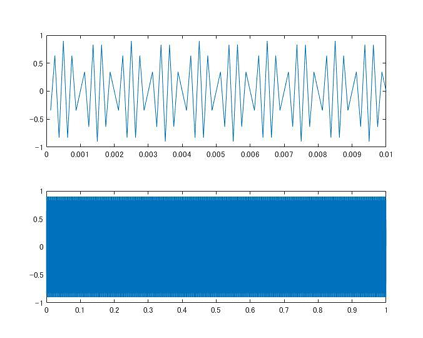
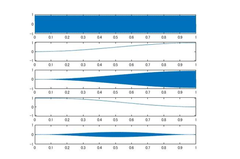
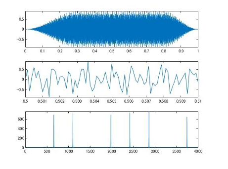
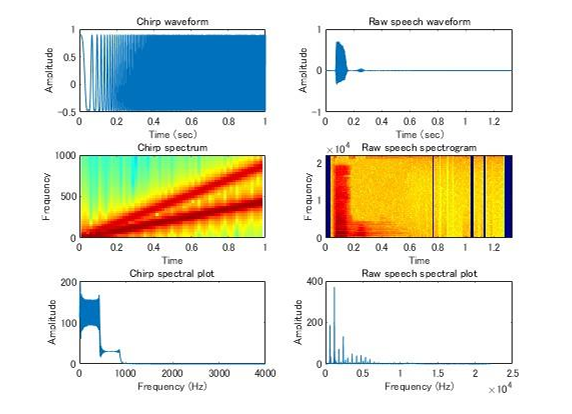

MATLABを用いたデジタル信号処理の基礎を学ぶためのプログラム群です。基本的なサイン波の生成から始まり、サンプリング定理に基づく折り返し雑音（エイリアシング）の確認や、コサイン関数を用いたエンベロープ（包絡線）による自然なフェードイン・フェードアウト処理を行っています。さらに、複数の倍音や非整数倍音を加算合成して金属的な音色変化を分析したり、録音した実際の音声（パフパフラッパ）に対してFFT（高速フーリエ変換）を行い、時間波形・スペクトル・スペクトログラムの3つの視点から音の特徴を視覚的かつ論理的に解析する手法を実装しました。
画像をクリックすると拡大表示されます。



